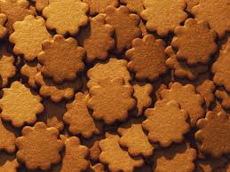

Julrecept
Pepparkakor

Ingridienser:
- brun farinsocker 2 1/2 dl
- ljus sirap 3/4 dl
- vatten 3/4 dl
- smör eller margarin 150 g
- malen kanel 1 msk
- malen ingefära 1 msk
- malen kryddnejlika 1 tsk
- vetemjöl ca 6 dl
- bikarbonat 1 1/2
Instruktioner:
- Blanda farinsocker, sirap och vatten i en kastrull. Koka upp blandningen.
- Llig i matfettet och låt det smälta. Tillsätt kryddorna.
- Låt massan kallna utan omrörning.
- Rör i bikarbonat och mjöl.
- Linda in degen i plastfolie. Låt den stå kallt till nästa dag.
- Sätt ugnen på 175°C.
- Arbeta degen smidig på mjölat bord. Baka en provkaka för att se om degen håller måttet, om
kakan
flyter ut, arbeta in lite mer mjöl i degen.
- Kavla ut degen tunt och ta ut kakor med mått. Lägg dem på smord plåt eller på
bakplåtspapper. Grädda
kakorna mitt i ugnen i 175°C, 6-8 min.
- Låt kakorna svalna på plåten. Förvaras i burk i rumstemperatur eller i frys.
Ica.se